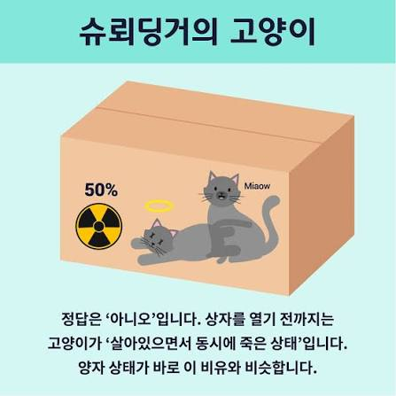
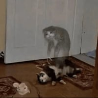

죽었는지 살았는지 아무도 모름

죽었는지 살았는지 아무도 모름
캣맘 나와주세요
오
제목이 저게 맞는 표현인가
ㅋㅋㅋㅋ 오타겠지
양자중첩이 참 신기해
과학자들이 왜 처음 저 내용을 부정했는지 너무 납득이 되더라.
내가 보기전엔 정해져있지 않고, 보면 그때 결정된다는게... 그게 말이 되는소린가 싶고 ㅋㅋㅋ
그 과학적 관측은 단순히 본다는 개념이 아니긴 합니다
단순히 본다는 개념이 아닌거야 알지.
관찰자가 확인하기 이전까지 정해져있지 않다는 개념 자체가 과학적으로 납득 안간다는것을 이야기 한것 뿐이니까.
양자는 그렇다치고 니네들 순자나 말자에 대해서도 알고는 있나
순자랑 말자는 잘 모르는데,
영조는 친자로 뒤주에 넣어 실험해봤다더라.
oh..
순자가 성악설을 주장한건 알고있지
아닌데, 순자는 옆집 내 고등학교 동기고 말자는 걔 친구이며 양자는 내가 두 명을 동시에 호칭할 때 부르는 말이야. 양자 모두 집에 과일 나무가 있어 나는 이걸 쌍방과실이라는 뜻으로 양자과실이라 불렀고 순자네 고양이는 박스를 좋아해서 거기들어가 죽은 듯이 잠을 잤고 말자네 고양이가 죽어 박스에 넣었는데 열어보니 산것처럼 평안해 보여서 난 상자를 열기전엔 산것도 죽은 것도 아니라고 위로했을 뿐이야. 양자 모두를 잘 아는 사람은 결국 나 뿐이구나.
씹노잼..
모텔상자를 열어서 시체를 봐버렸자나~
근데 저 상태로 냅두면 사망햇다고 봐도되는거아닌가? 물도안주는데
양자중첩을 이해시키려고 든 예시라서
정확하게 맞는비유는 아니긴하지
고양이가 특정 행동을 했나/안했나/못했나로 삶과 죽음을 따지는 게 아니라, 미시세계의 확률적 변화(방사선 붕괴 가능성이 1/2임)가 거시세계의 변화를 이끌어내(방사선 감지되면 상자 안 독성 물질 확산 트리거 발동) 고양이의 상태에 영향을 주는 통제된 실험 환경을 예시로 든 거라서 장기적인 생존 여부는 별개의 주제라고 보는 게 맞을 듯

결국 상자를 열어보셨다고 하네요~
리트냥이 스토킹냥이 공갈냥이 좆냥이 슈뢰딩거냥이